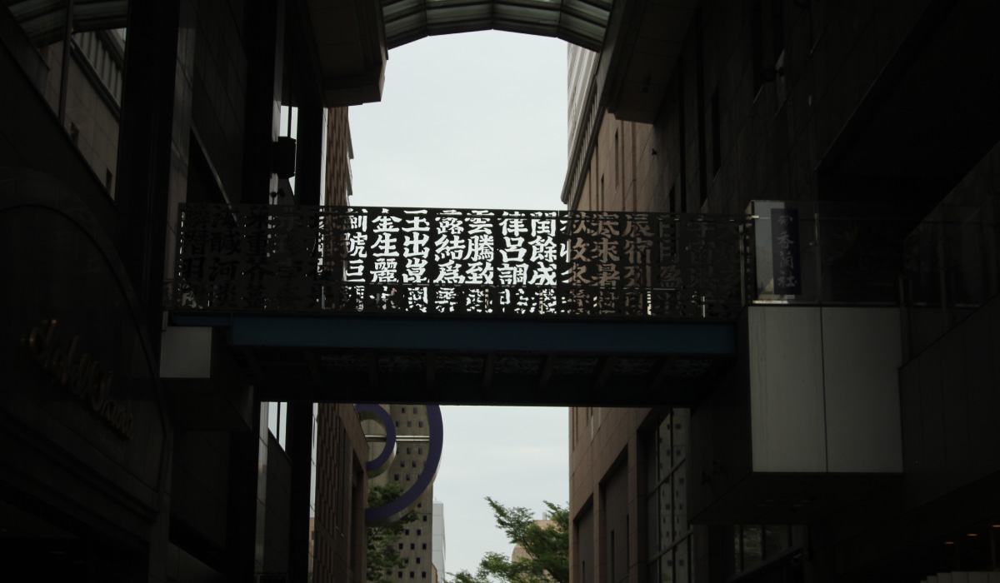
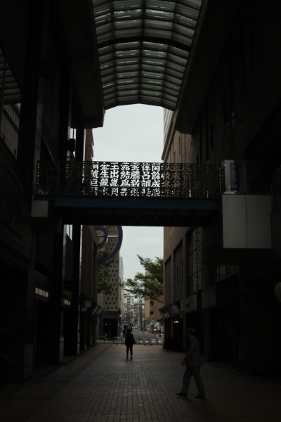
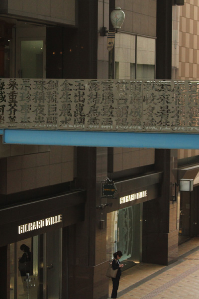
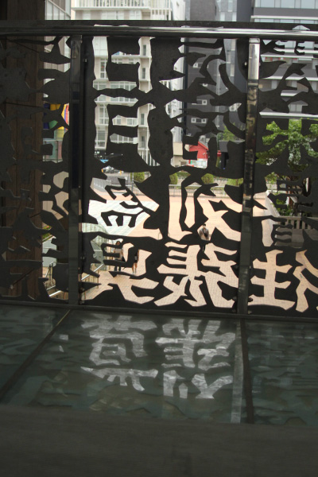
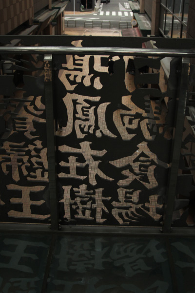
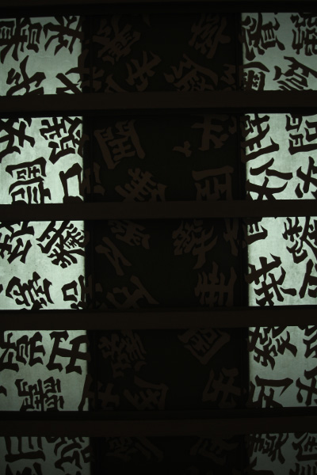
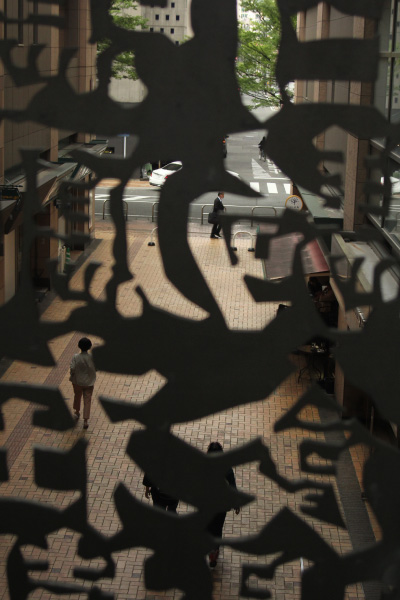

チョン・クゥンホー
     
博多リバレインのフェスタスクエア吹抜けに吊る橋自体を作品にしたもの。橋全体に散りばめら
れた漢字は韓国に古くから伝わる漢字習得のための四文字熟語。作者自筆の文字たちである。漢
は、日本を含めた北東アジアの国々に漢字の文化があることから、日本と近隣諸国との文化的な
つながりを感じルことができる作品。橋は博多祇園山笠の時に、はね上がる仕掛けになっている。